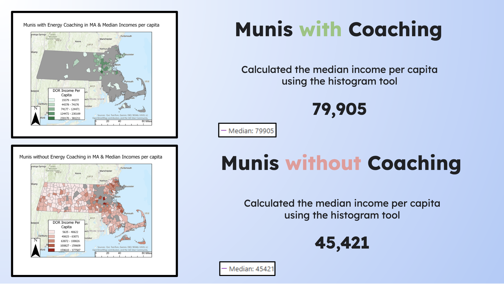
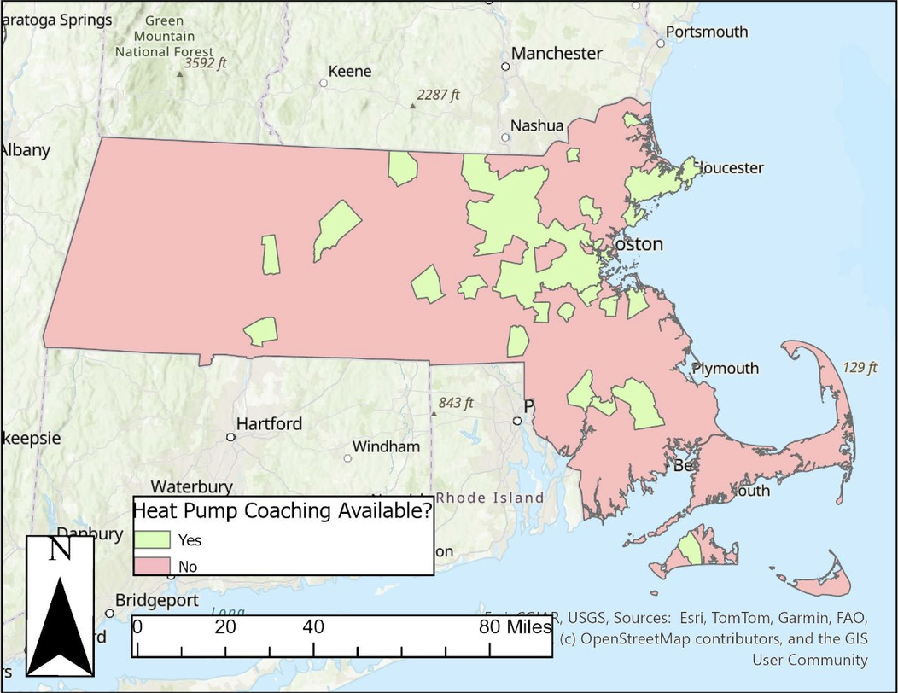

Policy Brief · GIS Spatial Analysis
A spatial analysis of equity gaps in heat pump coaching program availability across all 351 Massachusetts municipalities.
Background
Energy coaching programs connect residents with guidance on upgrading home heating and cooling systems, particularly heat pumps, a core technology in Massachusetts's building decarbonization strategy. These programs are intended to help residents navigate the complexity of available incentives, utility rebates, and contractor options, lowering barriers to adoption for households that need it most.
However, coaching is not uniformly available across the Commonwealth. Access depends largely on whether a municipality has chosen to establish or participate in a coaching program, creating a patchwork of coverage that may reflect existing disparities in municipal capacity and resources rather than resident need.
Research Question: How do the median incomes of municipalities with energy coaching programs differ from those without, and what does that mean for equitable resource access?
Methods
This analysis combined three datasets: energy coaching program availability data from NEEP, per capita income and population data from the Massachusetts Department of Revenue, and municipal boundary shapefiles from MassGIS. After data cleaning and standardization, a spatial join was performed in ArcGIS to connect income and population attributes to municipal boundaries. Summary statistics and histogram tools were used to calculate and compare median income distributions between coaching and non-coaching municipalities. A hotspot analysis on population (excluding Boston as an outlier) was conducted to understand the geographic concentration of larger municipalities and its relationship to coaching availability.
Key Findings
Municipalities with coaching programs have a median per capita income of $79,905, compared to $45,421 for those without. The statewide median is $47,294, meaning non-coaching municipalities are roughly in line with the state average, while coaching municipalities are far above it. This pattern suggests that coaching programs have, to date, proliferated in communities that already have greater financial resources and municipal capacity, rather than in the communities where residents face the highest energy cost burdens.

Geographically, coaching municipalities cluster in the MetroWest region and the coastal North Shore, known as affluent suburbs east of Worcester and north of Boston. Western Massachusetts, the South Shore, and the Cape are largely without coverage despite significant populations and meaningful energy burden challenges.

A secondary analysis examined population size. Coaching municipalities have a median population of 24,463 residents, compared to 9,049 for non-coaching municipalities: more than 2.5 times larger. This suggests that program implementation may be driven partly by municipal capacity: larger communities have more staff, resources, and administrative bandwidth to establish and sustain coaching programs.
Policy Implications
The findings point to a structural gap: the communities that would benefit most from coaching support are the least likely to have it. Closing this gap will require deliberate policy intervention rather than organic program growth. Three recommendations emerge from this analysis:
Expand the Municipal Energy Manager Grant model. The MEM Grant has successfully placed energy managers in municipalities and regional planning commissions to drive efficiency program adoption. A similar grant targeting coaching program implementation: with explicit focus on lower-income and smaller communities: could bridge the capacity gap. Regional planning commissions could serve as program hosts for clusters of smaller municipalities, aggregating demand across towns that individually lack the population to justify a standalone program.
Develop regional coaching models for smaller municipalities. The MEM Grant already uses a regional model: some energy managers cover multiple municipalities through regional planning commissions. Coaching programs could use the same structure, grouping towns with populations under 10,000 into regional cohorts. A combined population of four to six towns would rival coaching municipalities in demand while sharing program administration costs.
Provide implementation toolkits alongside funding. Municipalities without coaching often lack not just resources but knowledge of how to build a program. MassSave and state partners should develop accessible, replicable implementation guides drawn from the experience of established programs in communities like Acton, Concord, and Needham, to lower the knowledge barrier alongside the financial one.
Limitations & Next Steps
The coaching data used in this analysis reflects program availability as of August 2025 and does not distinguish between municipally administered programs and those run by nonprofits. Anecdotal evidence suggests municipal programs tend to achieve higher resident engagement, a distinction worth exploring empirically. Future work should also examine coaching program outcomes to identify what structural features predict success, and compare Massachusetts programs to those in other NEEP-region states where coaching infrastructure is less developed.